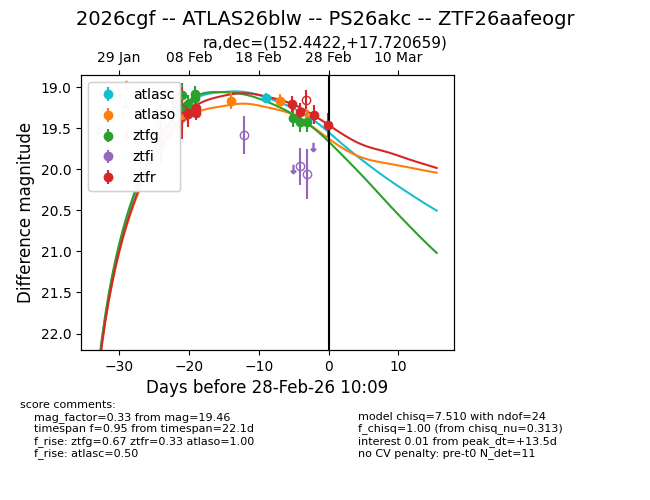
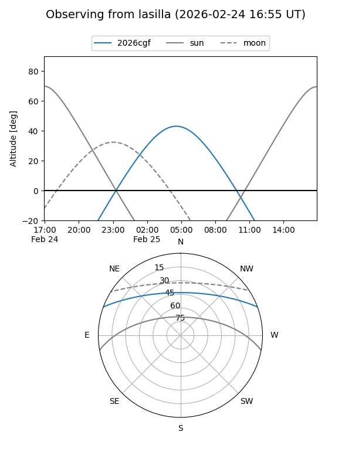
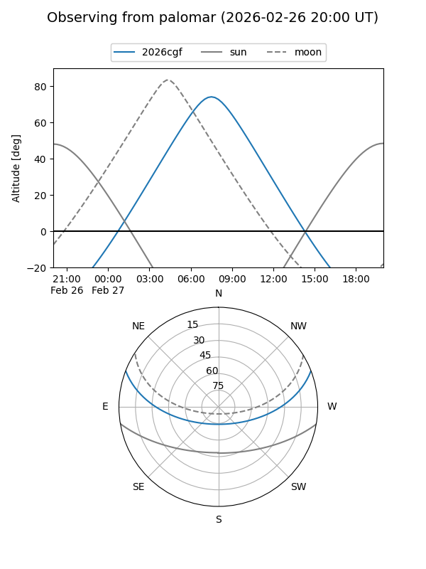
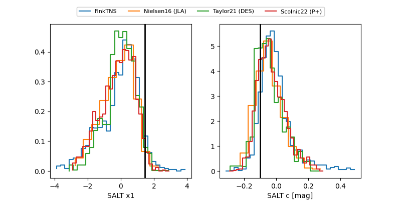

2026cgf
Target 2026cgf at 2026-02-28 10:10
Aliases and brokers:
FINK: link
Lasair: link
ALeRCE: link
TNS: link
YSE: link
alt names
ZTF26aafeogr (ztf,fink_ztf)
2026cgf (tns,yse)
ATLAS26blw (atlas)
PS26akc (panstarrs)
Coordinates:
equatorial (ra, dec) = 152.4422,+17.72066
equatorial (HMS+DMS) = 10:09:46.14,+17:43:14.37
galactic (l, b) = (218.4622,+51.64924)
Flags:
Photometry:
last atlasc=19.13, atlaso=19.16, ztfg=19.42, ztfr=19.46
1 atlasc, 2 atlaso, 10 ztfg, 7 ztfr detections
Lightcurve

Visibility


Additional plots
